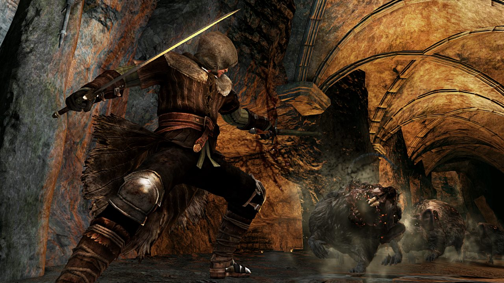

Mejores armas para cada clase

Emprezemos por la clase que mas me gusta el caballero:
Espada de dragon recta:se puede conseguir en el pirncipio del juego cortandole la cola al dragon rojo con un arco,esta arma te servira hasta la primera mitad del juego despues el daño se quedara corto
Alabarda:esta arma tiene un gran daño pero consume mucho aguante y es algo lenta pero con su daño lo equibale,te sirve para todo el juego si la mejoras lo suficiente.se obtiene despues de matar al jabali de acero pasando la reja que hay en el frente.
Alabarda del caballero negro:la mejor de todas mas rapida que la anterio con mucho mas daño,lo malo es que es dificil de conseguirla,se obtiene de los caballeros negros.
Gran garote:se obtiene en las profundidades del pantano en una esquina custodiado por los grandotes que tiran piedaras,mucho daño es lenta pero facil de usar la mejor armas pero require ser mejorada la maximo para todo el provecho de esta arma,la mejor para matar lo que sea y es facil de conseguir
Guerrero:
las mismas del caballero,tambien armas como las hachas y espadas comunes
Vagabundo:
Garote reforzado:se obtiene con el comersiate del principo,facil de usar buen daño y se mejora se puede usar todo el juego
Uchikatana:se obtiene matando al comersiate del pricipio pero esta sirve si quieres usar destreza y no fuerza.
Ladron:
la arma del comienzo no es tan mala si la mejoras,pero hay una mejor
Uchikatana:espicado antes,con esta clase es letan y un gran daño con destreza y provoca hemoragia muy buena.
Trazadora de oro:muy rapida se consigue dandole la alma de artorias a su amante mismo esenario donde es la pelea,buen daño con hemoragia es letal
Bandido:
todos los tipos de hachas.
Gran hacha:muy buen daño y tiene posibilidad de noquear,mejorar
Cazador:
Los arcos le bienen bien
Arco de paradis:se consigue en el bosque matando al arquero antes de el lobo sif.
Uchikatana:tambien para esta clase
Mago:
Baston de magnus:se hace con el alma de magnus
baston comun o los de demonio.
Armas de magia con daño magico
Piromante:
Garotazo:se obtiene matando a los gordos en las profundidades.buena arma
esta clase usa casi cualquier arma.
Clerigo:
Espada hacha:mejorada al maximo,comprar a cualquier mercader.
y armas de magia tambien o lo que sea se adapta.
Marginado:

Cualquier arma es una clase con todas las hablilidades equilibradas.